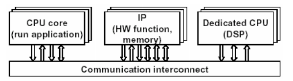

Week 13
Solid and flexible
How to accelerate the system?
- scaling and clock boost
- parallelization and concurrency
How to make the system flexible?
- put a reconfigurable stage or part in the system
- design level and granularity
System on a chip
started with the idea of integrating all components in a board into a single chip
In the last 20 years the technologies implementing embedded systems evolved from microcontrollers and discrete components to fully integrated systems-on-chip (SoC)
SoCs and related technologies are the engines of embedded systems in the foreseeable future.
To increase the productivity for future designs, the approach of reusable components was adopted = intellectual property cores (IPs)
Intellectual property (IP)
Hard cores are provided as black boxes, usually in layout form in a given technology and with an encrypted simulation model. Examples of hard cores are microprocessors, phase-locked loops mixed single blocks.
Firm cores are provided as a synthesized netlist in a hardware-description language (HDL), that is, after logic synthesis and technology mapping, but without layout information. These cores can be simulated and changed if necessary.
Soft cores are given as register-transfer level HDLs, and the user is responsible for its synthesis and layout. Usually along with the soft cores, the IP providers also supply synthesis and layout scripts and timing assertions.
Why SoC?
System architects cannot afford design restarts.
HW and SW design teams cannot afford n design iterations or to learn all the details about every potential IP core.
System managers cannot afford to reinvest in completely new tools.
IC business managers cannot afford missing customer market windows or foundry schedules.
Industry shifts from ASICs to systems-on-a-chip.
SoC in real life
Microcontrollers
- small core + simple peripheral IO
- Non-volatile storage
Application processors
- high performance core(s) + graphic accelerator…
- Sophisticated IOs including ethernet, USB
OS, SW development environment…
For education: Arduino, Raspberry Pi…
General SoC architecture

Heterogeneous processors
- those used to run the end application and
- those dedicated to execute specific functions that could have been designed in hardware
application-specific Intellectual Property (IP) cores
Communication interconnect
IP-based design of implementation

HW and SW co-design
hardware/software partitioning
- different architectures (such as processor cores: ARM, DSP) are selected for possible implementation, to explore various HW/SW partitioning tradeoffs
interface design
- elect the corresponding communication mechanisms (memory mapped I/O, fast interrupt request etc.,) for a given target core.
- co-simulation and co-implementation
Solid and flexible design
validating designs
- by construction - property is inherent
- by verification - property is provable
- by simulation - check behavior for all inputs
- by intuition - property is true. I just know it is.
- by intimidation - don’t even try to doubt whether it is true
It is generally better to be higher in this list.

efficient system
- performance, cost, energy, time-to-market
efficient design
- reduce trial cost
- narrow design space
avoid starting from scratch, then where and how?
SoC and platform

platform as a meeting point
redundant or partially reconfigurable ASIC with core and SW
reuse system design—hardware, software
- any given space has a limited number of good solutions to its basic problems
- a platform captures the good solutions to the important design challenges in that space